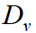
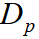
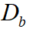

Contact
Please feel free to contact us with any questions and submit issue on github:
1 · Introduction
Our trajectory dataset consists of camera-based images, LiDAR scanned point clouds, and manually annotated trajectories. It is collected under various lighting conditions and traffic densities. More specifically, it contains highly complicated traffic flows mixed with vehicles, riders, and pedestrians.


2 · Data Download
The trajectory dataset consists of 53min training sequences and 50min testing sequences captured at 2 frames per second.
Request to download full data: Please Send Email.
Sample data
Training data
Testing data
3 · Data Structure
The folder structure of the trajectory prediction is as follows:
1) prediction_train.zip: training data for trajectory prediction.
∙ Each file
is a 1min sequence with 2fps.
∙ Each line in a file contains frame_id, object_id, object_type,
position_x, position_y, position_z, object_length, object_width, object_height, heading.
∙ There
are five different object types as shown in following table. During the evaluation in this
challenge, we treat the first two types, small vehicle and big vehicle, as one type (vehicle).
| object_type | small vehicles | big vehicles | pedestrian | motorcyclist and bicyclist | others |
|---|---|---|---|---|---|
| ID | 1 | 2 | 3 | 4 | 5 |
∙ Position is given in the world coordinate system. The unit for the position and
bounding box is meter.
∙ The heading value is the steering radian with respect to the direction
of the object.
∙ In this challenge, we mainly evaluate predicted position_x and position_y in the
next 3 seconds.
2) prediction_test.zip: testing data for trajectory prediction.
∙ Each line
contains frame_id, object_id, object_type, position_x, position_y, position_z, object_length,
object_width, object_height, heading.
∙ A testing sequence contains every six frames in the
prediction_test.txt. Each sequence is evaluated independently.
4 · Evaluation
The evaluation scripts are released on github: https://github.com/ApolloScapeAuto/dataset-api/tree/master/trajectory_prediction.
During the evaluation in this challenge, we treat the first two types, small vehicle and big vehicle, as one type (vehicle). However, please keep the original type IDs during the training and prediction, we will merge the first two types in our evaluation scripts. In this challenge, the data from the first three seconds in each sequence is given as input data, the task is to predict trajectories of objects for the next three seconds. The objects used in evaluation are the objects that appear in the last frame of the first three seconds. The errors between predicted locations and the ground truth of these objects are then computed.
5 · Metric formula
We adopt the metric similar to [1] to measure the performance of algorithms.
1. Average displacement error (ADE): The mean Euclidean distance over all the predicted positions and ground truth positions during the prediction time.
2. Final displacement error (FDE): The mean Euclidean distance
between the final predicted positions and the corresponding ground truth locations.
Because the
trajectories of cars, bicyclist and pedestrians have different scales, we use the following weighted
sum of ADE (WSADE) and weighted sum of FDE (WSFDE) as metrics.

where , , and  are related to reciprocals of the average velocity of vehicles, pedestrian and cyclist in the dataset. We adopt 0.20, 0.58, 0.22 respectively.
6 · Rules of ranking
Result benchmark will be:
| Rank | Method | WSADE | ADEv | ADEp | ADEb | WSFDE | FDEv | FDEp | FDEb |
|---|---|---|---|---|---|---|---|---|---|
| xx | xxx | xx | xx | xx | xx | xx | xx | xx | xx |
Our ranking will determined by WSADE of all types of objects.
7 · Format of submission file
- The submission should be one single text file.
- Each submission line should
represent one object instance, with the following fields: frame_id, object_id, object_type,
position_x, and position_y. Each row in submission must have all the required fields with the exact
order.
- Every six frames constitute a sequence. Pay attention to make right correspondence to
test data. It means sequences in test data and your result should have the same number and same
order. Same objects should have the same id. Different frames should have different ids.
8 · Publication
|
Please cite our paper in your publications if our dataset is used in your research. TrafficPredict: Trajectory Prediction for Heterogeneous Traffic-Agents [
Website
][
PDF
] [BibTex] |
9 · Reference
[1] Pellegrini S, Ess A, Schindler K, et al. You'll never walk alone: Modeling social behavior for multi-target tracking[C]. Computer Vision, 2009 IEEE 12th International Conference on. IEEE, 2009: 261-268.
Contact
Please feel free to contact us with any questions and submit issue on github:
Q & A
Q1. Does the dataset include synchronized RGB data?
We have not labeled the image data. Current challenge is just based on the trajectory data.
Q2. Is the trajectory of the ego vehicle also included?
No, the data does not contain the trajectory of the ego vehicle.
Q3. How are these world coordinates generated?
We use the relative positions from LiDAR and the GPS of the ego vehicle to compute the locations of other traffic-agents in the world coordinate system.
Q4. What are the relationships among different files in the training dataset?
They are captured in different period and they are independent.